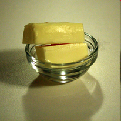
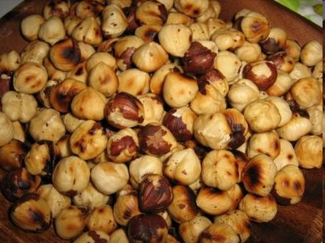

Valoarea nutritivă - este dată de cantitatea de substanţe nutritive pe care acestea le dau organismului uman, necesare pentru desfăşurarea proceselor fundamentale.
Elementele nutritive
Proteinele
Au rol în reinoirea ţesuturilor din organism.Sunt prezente în:
- carne
- lapte
- ouă
- mazare
- salată
- legume, etc.
Lipidele (grăsimile)
Au un important rol energetic pentru ca dintr-un gram de lipide rezultă 9.3 kilocalorii.Se găsesc în:
- lapte
- ouă
- carne de porc
- unt
- ulei
- nuci
- alune, etc.


Glucidele
Au rolul de a furniza energie.Prin arderea unui gram de glucide se obtine o cantitate de energie de 4.1 kilocalorii.
Sunt conținute în:
- fructe
- miere
- legume
- boabele cerealelor
- cartofi, etc.
Vitaminele
Au rol important în organism:- Vitamina A - importantă pentru văz:
- morcov
- salată, etc.
- Vitamina D - ajută în procesul de osificare:
- gălbenușul de ou
- ciuperci
- untură de peşte, etc.
- Vitamina C - dă rezistenţă împotriva răcelii, ajută la cicatrizarea rănilor:
- măceşe
- lămâi
- portocale
- morcovi, etc.
Substanțele minerale
Au rol în desfăşurarea proceselor vitale:- sodiul
- calciul
- potasiul
- fierul
- magneziul
- fosforul
- iodul.
Grupele de alimente
- carnea şi derivatele sale
- laptele şi produsele lactate
- grăsimile alimentare
- ouăle
- cerealele şi derivatele lor
- legumele şi fructele
- produsele zaharoase
- băuturile nealcolice
- condimentele.